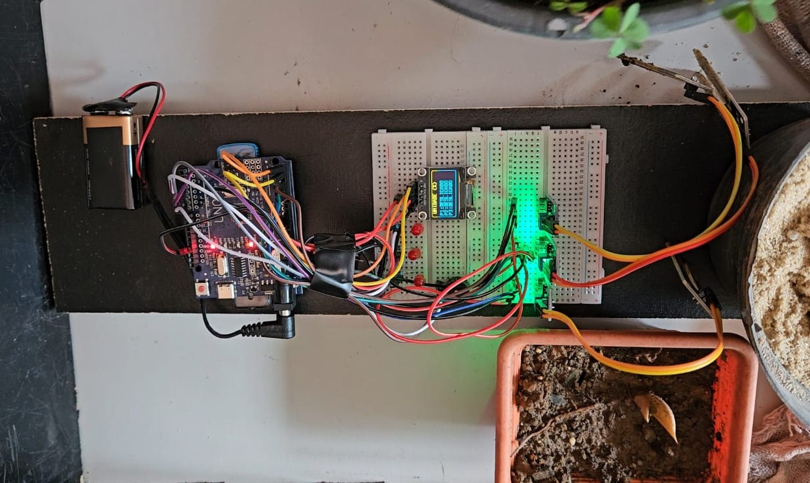

Histórico da Empresa
A SoloSmart, fundada em 2025, desenvolve soluções tecnológicas acessíveis para monitorar a umidade do solo. Seu principal produto é um sistema automatizado baseado em Arduino que mede a umidade de até três plantas ao mesmo tempo, exibindo valores em tempo real (0 a 100%) e usando alertas visuais e sonoros para indicar quando a irrigação é necessária — LED vermelho aos 40% e buzzer contínuo aos 30%.
Voltada para pequenos produtores, hortas urbanas e cultivadores domésticos, a SoloSmart oferece uma alternativa prática e independente de internet, ajudando a evitar perdas por falta de água e garantindo maior controle sobre a irrigação. Atualmente em fase de prototipagem, a empresa planeja incluir sensores de temperatura, pH e análises de tipo de solo, buscando tornar-se referência em tecnologia simples, sustentável e eficiente para o manejo agrícola.
Produtos e Serviços
SoloSmart — Atualmente, o dispositivo SoloSmart é um sistema manual e local, que não utiliza conexão Wi-Fi, Bluetooth ou internet para o envio de informações. Toda a interação ocorre diretamente no local de uso, de forma prática e acessível, sem depender de dispositivos externos.
Versões futuras incluirão tecnologia IoT. Dessa forma, o SoloSmart funciona como um sistema de monitoramento local e independente, sem necessidade de internet, aplicativos ou conexões externas — atendendo pequenas produções e hortas.
Funcionamento do Protótipo
Protótipo Inicial
Protótipo Final
O funcionamento ocorre da seguinte maneira:
- Os sensores de umidade do solo realizam a leitura dos níveis de umidade em até três plantas simultaneamente;
- As informações são exibidas imediatamente em um display LCD, com valores percentuais de 0% a 100%;
- O sistema de LEDs (vermelho) indica o estado do solo, facilitando a visualização do usuário;
- Um buzzer sonoro é ativado quando o solo atinge níveis críticos de umidade (30%), alertando para a necessidade de irrigação.
Equipe de Desenvolvimento
Adrian de Oliveira Lopes
VideoMaker
Carlos Eduardo da Silva
Desenvolvedor IoT
Diogo Henrique da Silva Marques
Desenvolvedor Back-End
Felipe Silva San Martino
VideoMaker
Isabella Maia Rocha
Front-End
Larissa Oliveira dos Santos
Documentação
Maria Caroline Correa de Souza
Gerente de Projeto / Front-End
Patrick Enrique Zago da Silva
Back-End
Urias Rodrigues Neto
VideoMaker